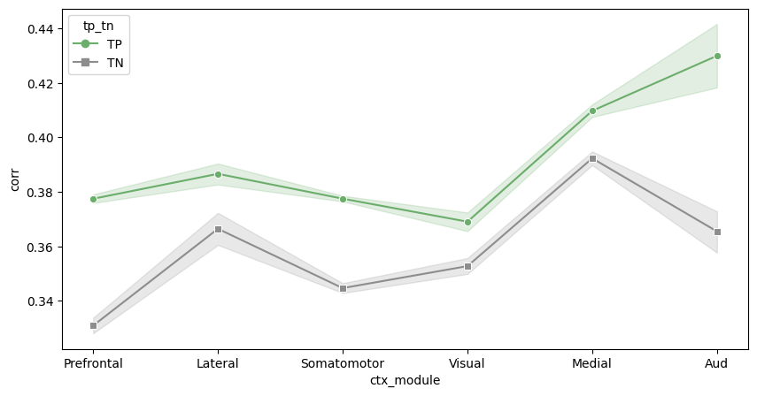

4_ctx_layer56_and_th_correlation
[1]:
import pandas as pd
import anndata
import scanpy as sc
from tqdm import tqdm
import matplotlib.pyplot as plt
import numpy as np
import warnings
import seaborn as sns
from scipy.cluster.hierarchy import fcluster, linkage
import matplotlib as mpl
mpl.rcParams['pdf.fonttype'] = 42
mpl.rcParams['ps.fonttype'] = 42
warnings.filterwarnings('ignore')
[2]:
ctx_regions = ['ACAd', 'ACAv', 'PL', 'ILA', 'ORBl', 'ORBvl', 'AId', 'SSs', 'SSp-bfd', 'SSp-ll', 'SSp-ul', 'SSp-n', 'SSp-m', 'MOp',
'MOs', 'VISal', 'VISl', 'VISp', 'VISpor', 'VISrl', 'VISam', 'VISpm', 'RSPd', 'RSPv', 'AUDp']
th_regions = ['VPL', 'VPM', 'PO', 'PoT', 'VPMpc', 'VPLpc', 'SPFp',
'MG', 'PIL', 'PP', 'SGN', 'AD', 'AV', 'LD', 'LP', 'VAL', 'PF', 'CL',
'SubG', 'LGv', 'IGL', 'POL', 'MD', 'IMD', 'CM', 'SMT',
'SPA', 'VM', 'PCN', 'PVT', 'PT', 'RE', 'SPFm', 'Xi', 'RH', 'IAM', 'PR',
'LH', 'MH', 'IAD', 'RT']
[3]:
adata_raw = sc.read_h5ad('/mnt/Data16Tc/home/haichao/code/SpaCon/Data/N_20231213_zxw/mouse_3/adata_processed.h5ad')
allen_region = pd.read_csv('/mnt/Data16Tc/home/haichao/code/SpaCon/Data/N_20231213_zxw/mouse_3/allen_region.csv')
adata_raw.obs['region'] = allen_region['region'].values
# add cell type
meta = pd.read_csv('/mnt/Data16Tc/home/haichao/code/SpaCon/Data/N_20231213_zxw/mouse_3/cell_metadata_with_cluster_annotation.csv')
meta = meta.set_index('cell_label')
meta = meta.loc[adata_raw.obs.index.to_list()]
adata_raw.obs['cell_type'] = meta['class'].to_list()
adata_raw.obs
[3]:
| brain_section_label | x | y | z | x_ccf | y_ccf | z_ccf | region | cell_type | |
|---|---|---|---|---|---|---|---|---|---|
| cell_label | |||||||||
| 198904341065180396762707397604803217407 | Zhuang-ABCA-3.023 | 49.206853 | 44.877634 | 12.168155 | 4.920685 | 4.487763 | 1.216815 | SSs1 | 33 Vascular |
| 252199681526991424029643077826220097990 | Zhuang-ABCA-3.023 | 48.973992 | 44.813761 | 12.179006 | 4.897399 | 4.481376 | 1.217901 | SSs1 | 33 Vascular |
| 277720971126854564514249564750701518375 | Zhuang-ABCA-3.023 | 48.791066 | 44.577722 | 12.192707 | 4.879107 | 4.457772 | 1.219271 | SSs1 | 33 Vascular |
| 31551867344111790264292067056219852271 | Zhuang-ABCA-3.023 | 48.830489 | 44.426120 | 12.195078 | 4.883049 | 4.442612 | 1.219508 | SSs1 | 33 Vascular |
| 131102494428104399865219008178262036485 | Zhuang-ABCA-3.023 | 48.308843 | 43.028156 | 12.267879 | 4.830884 | 4.302816 | 1.226788 | SSs1 | 34 Immune |
| ... | ... | ... | ... | ... | ... | ... | ... | ... | ... |
| 318102106429791409781741726367984532777 | Zhuang-ABCA-3.009 | 131.090716 | 69.334275 | 41.436743 | 13.109072 | 6.933427 | 4.143674 | MDRNd | 30 Astro-Epen |
| 35262847161560382172299767067854387528 | Zhuang-ABCA-3.009 | 131.216032 | 69.494070 | 41.351034 | 13.121603 | 6.949407 | 4.135103 | MDRNd | 33 Vascular |
| 75415866509570969932943497000463821106 | Zhuang-ABCA-3.009 | 131.415152 | 70.764504 | 40.800403 | 13.141515 | 7.076450 | 4.080040 | sctd | 24 MY Glut |
| 12350978322417280063239916106423065862 | Zhuang-ABCA-3.009 | 131.646167 | 71.182557 | 40.595995 | 13.164617 | 7.118256 | 4.059599 | sctd | 24 MY Glut |
| 327554758863546024460748891922509519354 | Zhuang-ABCA-3.009 | 131.658892 | 71.414675 | 40.501356 | 13.165889 | 7.141468 | 4.050136 | sctd | 24 MY Glut |
1566842 rows × 9 columns
[4]:
adata_th = adata_raw[adata_raw.obs['region'].isin(th_regions)]
adata_th = adata_th[adata_th.obs['cell_type'].str.contains('Glut')]
adata_ctx = adata_raw[(adata_raw.obs['region'].str.startswith(tuple(ctx_regions))) & (adata_raw.obs['region'].str.contains('5|6'))]
adata_ctx = adata_ctx[adata_ctx.obs['cell_type'].str.contains('Glut')]
adata_ctx.obs
[4]:
| brain_section_label | x | y | z | x_ccf | y_ccf | z_ccf | region | cell_type | |
|---|---|---|---|---|---|---|---|---|---|
| cell_label | |||||||||
| 29162871883387929795006067736640436040 | Zhuang-ABCA-3.023 | 61.666898 | 42.255912 | 12.232613 | 6.166690 | 4.225591 | 1.223261 | SSs5 | 01 IT-ET Glut |
| 293032136699589827732370249746624703959 | Zhuang-ABCA-3.023 | 62.396840 | 41.838307 | 12.216430 | 6.239684 | 4.183831 | 1.221643 | SSs5 | 01 IT-ET Glut |
| 169008133492981499504077797165914124518 | Zhuang-ABCA-3.023 | 64.994841 | 40.394608 | 12.161029 | 6.499484 | 4.039461 | 1.216103 | SSs5 | 01 IT-ET Glut |
| 227494694293280194589855295428860091482 | Zhuang-ABCA-3.023 | 64.498586 | 40.611089 | 12.175537 | 6.449859 | 4.061109 | 1.217554 | SSs5 | 01 IT-ET Glut |
| 33873656525375865261837620890496116573 | Zhuang-ABCA-3.023 | 64.282103 | 41.059249 | 12.175800 | 6.428210 | 4.105925 | 1.217580 | SSs5 | 01 IT-ET Glut |
| ... | ... | ... | ... | ... | ... | ... | ... | ... | ... |
| 229580843941555951333299912014571135110 | Zhuang-ABCA-3.009 | 97.429638 | 10.575478 | 38.381706 | 9.742964 | 1.057548 | 3.838171 | VISp5 | 01 IT-ET Glut |
| 248292745152448671917314233790662445907 | Zhuang-ABCA-3.009 | 97.150793 | 11.549455 | 38.284627 | 9.715079 | 1.154945 | 3.828463 | VISp5 | 01 IT-ET Glut |
| 329636896424947842904418891891676096227 | Zhuang-ABCA-3.009 | 97.098822 | 10.816952 | 38.350628 | 9.709882 | 1.081695 | 3.835063 | VISp5 | 01 IT-ET Glut |
| 210578552686403511812793479380810073674 | Zhuang-ABCA-3.009 | 98.298868 | 11.674211 | 38.311367 | 9.829887 | 1.167421 | 3.831137 | VISp5 | 01 IT-ET Glut |
| 5967642066674772504918301827478668961 | Zhuang-ABCA-3.009 | 98.354235 | 12.399570 | 38.259130 | 9.835423 | 1.239957 | 3.825913 | VISp5 | 01 IT-ET Glut |
60861 rows × 9 columns
[8]:
adata = anndata.concat([adata_ctx, adata_th])
adata.obs
[8]:
| brain_section_label | x | y | z | x_ccf | y_ccf | z_ccf | region | cell_type | |
|---|---|---|---|---|---|---|---|---|---|
| cell_label | |||||||||
| 29162871883387929795006067736640436040 | Zhuang-ABCA-3.023 | 61.666898 | 42.255912 | 12.232613 | 6.166690 | 4.225591 | 1.223261 | SSs5 | 01 IT-ET Glut |
| 293032136699589827732370249746624703959 | Zhuang-ABCA-3.023 | 62.396840 | 41.838307 | 12.216430 | 6.239684 | 4.183831 | 1.221643 | SSs5 | 01 IT-ET Glut |
| 169008133492981499504077797165914124518 | Zhuang-ABCA-3.023 | 64.994841 | 40.394608 | 12.161029 | 6.499484 | 4.039461 | 1.216103 | SSs5 | 01 IT-ET Glut |
| 227494694293280194589855295428860091482 | Zhuang-ABCA-3.023 | 64.498586 | 40.611089 | 12.175537 | 6.449859 | 4.061109 | 1.217554 | SSs5 | 01 IT-ET Glut |
| 33873656525375865261837620890496116573 | Zhuang-ABCA-3.023 | 64.282103 | 41.059249 | 12.175800 | 6.428210 | 4.105925 | 1.217580 | SSs5 | 01 IT-ET Glut |
| ... | ... | ... | ... | ... | ... | ... | ... | ... | ... |
| 137125155786416424728071422508382942054 | Zhuang-ABCA-3.009 | 86.480430 | 34.094203 | 37.248728 | 8.648043 | 3.409420 | 3.724873 | SGN | 19 MB Glut |
| 186321231466624970722021094909324401885 | Zhuang-ABCA-3.009 | 86.443977 | 35.015822 | 37.291043 | 8.644398 | 3.501582 | 3.729104 | POL | 19 MB Glut |
| 262284519603134366801326445274337827961 | Zhuang-ABCA-3.009 | 86.388989 | 32.866518 | 37.212756 | 8.638899 | 3.286652 | 3.721276 | SGN | 19 MB Glut |
| 33608739852097367198466784523454261485 | Zhuang-ABCA-3.009 | 86.904204 | 34.752896 | 37.268567 | 8.690420 | 3.475290 | 3.726857 | POL | 19 MB Glut |
| 303385550649730012456703013017610179856 | Zhuang-ABCA-3.009 | 88.389510 | 37.024369 | 37.400811 | 8.838951 | 3.702437 | 3.740081 | POL | 19 MB Glut |
71462 rows × 9 columns
[9]:
sc.pp.normalize_total(adata, target_sum=1e4)
sc.pp.log1p(adata)
adata
[9]:
AnnData object with n_obs × n_vars = 71462 × 1122
obs: 'brain_section_label', 'x', 'y', 'z', 'x_ccf', 'y_ccf', 'z_ccf', 'region', 'cell_type'
uns: 'log1p'
ctx layer56 th correlation
L5/L6 corr
[24]:
mergecell_num = 80
def cluster_region(df_region, num_points=mergecell_num):
# Perform hierarchical cluster
Z = linkage(df_region[['x', 'y', 'z']], method='ward')
# Divided into clusters according to the results of the cluster, each cluster has about NUM_POINTS individual points
cluster_labels = fcluster(Z, t=len(df_region) / num_points, criterion='maxclust')
return cluster_labels
# Initialize a empty cluster label
adata.obs['subregion'] = 0
# Perform clusters separately for each area
for region in adata.obs['region'].unique():
mask = adata.obs['region'] == region
if adata[adata.obs['region'] == region].shape[0] < 80:
adata.obs.loc[mask, 'subregion'] = adata.obs.loc[mask, 'region'].apply(lambda x: x + '_1')
continue
clu_list = cluster_region(adata.obs[mask])
cl_list = [f'{region}_{i}' for i in clu_list]
adata.obs.loc[mask, 'subregion'] = cl_list
adata.obs
[24]:
| brain_section_label | x | y | z | x_ccf | y_ccf | z_ccf | region | cell_type | subregion | |
|---|---|---|---|---|---|---|---|---|---|---|
| cell_label | ||||||||||
| 29162871883387929795006067736640436040 | Zhuang-ABCA-3.023 | 61.666898 | 42.255912 | 12.232613 | 6.166690 | 4.225591 | 1.223261 | SSs5 | 01 IT-ET Glut | SSs5_16 |
| 293032136699589827732370249746624703959 | Zhuang-ABCA-3.023 | 62.396840 | 41.838307 | 12.216430 | 6.239684 | 4.183831 | 1.221643 | SSs5 | 01 IT-ET Glut | SSs5_16 |
| 169008133492981499504077797165914124518 | Zhuang-ABCA-3.023 | 64.994841 | 40.394608 | 12.161029 | 6.499484 | 4.039461 | 1.216103 | SSs5 | 01 IT-ET Glut | SSs5_15 |
| 227494694293280194589855295428860091482 | Zhuang-ABCA-3.023 | 64.498586 | 40.611089 | 12.175537 | 6.449859 | 4.061109 | 1.217554 | SSs5 | 01 IT-ET Glut | SSs5_15 |
| 33873656525375865261837620890496116573 | Zhuang-ABCA-3.023 | 64.282103 | 41.059249 | 12.175800 | 6.428210 | 4.105925 | 1.217580 | SSs5 | 01 IT-ET Glut | SSs5_15 |
| ... | ... | ... | ... | ... | ... | ... | ... | ... | ... | ... |
| 137125155786416424728071422508382942054 | Zhuang-ABCA-3.009 | 86.480430 | 34.094203 | 37.248728 | 8.648043 | 3.409420 | 3.724873 | SGN | 19 MB Glut | SGN_1 |
| 186321231466624970722021094909324401885 | Zhuang-ABCA-3.009 | 86.443977 | 35.015822 | 37.291043 | 8.644398 | 3.501582 | 3.729104 | POL | 19 MB Glut | POL_1 |
| 262284519603134366801326445274337827961 | Zhuang-ABCA-3.009 | 86.388989 | 32.866518 | 37.212756 | 8.638899 | 3.286652 | 3.721276 | SGN | 19 MB Glut | SGN_1 |
| 33608739852097367198466784523454261485 | Zhuang-ABCA-3.009 | 86.904204 | 34.752896 | 37.268567 | 8.690420 | 3.475290 | 3.726857 | POL | 19 MB Glut | POL_1 |
| 303385550649730012456703013017610179856 | Zhuang-ABCA-3.009 | 88.389510 | 37.024369 | 37.400811 | 8.838951 | 3.702437 | 3.740081 | POL | 19 MB Glut | POL_1 |
71462 rows × 10 columns
[26]:
regions = adata.obs['subregion'].values
gene_expression = adata.X.A
# Create a DataFrame to integrate regional information and gene expression matrix together
df = pd.DataFrame(gene_expression, columns=adata.var_names)
df['subregion'] = regions
# Calculate the average gene expression by regional grouping and calculate the average gene
region_mean_expression = df.groupby('subregion').mean()
# Convert the result to the matrix format of the regional*gene
region_gene_matrix = region_mean_expression.values
region_gene_matrix.shape
[26]:
(867, 1122)
[27]:
corr_all = np.corrcoef(region_gene_matrix)
corr_all.shape
[27]:
(867, 867)
[28]:
adata_th = adata[adata.obs['region'].isin(th_regions)]
th_subregions = adata_th.obs['subregion'].unique()
th_subregions.shape
[28]:
(124,)
[29]:
adata_ctx = adata[adata.obs['region'].str.startswith(tuple(ctx_regions))]
ctx_subregions = adata_ctx.obs['subregion'].unique()
ctx_subregions.shape
[29]:
(743,)
[30]:
region_labels = region_mean_expression.index
ctx_indices = [i for i, label in enumerate(region_labels) if label in ctx_subregions]
th_indices = [i for i, label in enumerate(region_labels) if label in th_subregions]
corr = corr_all[np.ix_(ctx_indices, th_indices)]
corr.shape
[30]:
(743, 124)
[31]:
ctx_regions_df = [region_labels[i] for i in ctx_indices]
th_regions_df = [region_labels[i] for i in th_indices]
corr_df = pd.DataFrame(corr, index=ctx_regions_df, columns=th_regions_df)
corr_df
[31]:
| AD_1 | AD_2 | AD_3 | AV_1 | AV_2 | AV_3 | AV_4 | CL_1 | CL_2 | CM_1 | ... | VPM_2 | VPM_3 | VPM_4 | VPM_5 | VPM_6 | VPM_7 | VPM_8 | VPM_9 | VPMpc_1 | VPMpc_2 | |
|---|---|---|---|---|---|---|---|---|---|---|---|---|---|---|---|---|---|---|---|---|---|
| ACAd5_1 | 0.410782 | 0.399958 | 0.429878 | 0.389128 | 0.399872 | 0.379626 | 0.385972 | 0.433726 | 0.448486 | 0.418421 | ... | 0.349622 | 0.392964 | 0.367910 | 0.383102 | 0.396261 | 0.393593 | 0.400477 | 0.395913 | 0.471805 | 0.461550 |
| ACAd5_10 | 0.393125 | 0.382621 | 0.415251 | 0.376264 | 0.384030 | 0.365063 | 0.373579 | 0.424826 | 0.446542 | 0.411051 | ... | 0.326493 | 0.371632 | 0.347403 | 0.361314 | 0.376664 | 0.377090 | 0.379626 | 0.376344 | 0.458214 | 0.458316 |
| ACAd5_11 | 0.398234 | 0.380920 | 0.420792 | 0.413818 | 0.409845 | 0.394324 | 0.400633 | 0.455472 | 0.467039 | 0.445792 | ... | 0.374350 | 0.416192 | 0.391017 | 0.403894 | 0.426616 | 0.423503 | 0.427803 | 0.423335 | 0.489865 | 0.486841 |
| ACAd5_12 | 0.410527 | 0.393434 | 0.435584 | 0.420335 | 0.419085 | 0.401034 | 0.407594 | 0.460431 | 0.469367 | 0.445620 | ... | 0.388494 | 0.428909 | 0.405853 | 0.419587 | 0.437670 | 0.435193 | 0.440099 | 0.432376 | 0.496598 | 0.487125 |
| ACAd5_13 | 0.396818 | 0.378964 | 0.416866 | 0.407649 | 0.404479 | 0.390833 | 0.399343 | 0.460673 | 0.475524 | 0.454787 | ... | 0.371024 | 0.411906 | 0.387836 | 0.398777 | 0.426981 | 0.425960 | 0.424657 | 0.425608 | 0.492338 | 0.495915 |
| ... | ... | ... | ... | ... | ... | ... | ... | ... | ... | ... | ... | ... | ... | ... | ... | ... | ... | ... | ... | ... | ... |
| VISrl5_3 | 0.403946 | 0.392158 | 0.447694 | 0.412068 | 0.431390 | 0.391572 | 0.398629 | 0.458871 | 0.478694 | 0.423189 | ... | 0.357283 | 0.430841 | 0.399325 | 0.415467 | 0.413560 | 0.410179 | 0.426174 | 0.418796 | 0.503235 | 0.475361 |
| VISrl6a_1 | 0.353894 | 0.351150 | 0.377903 | 0.321932 | 0.336051 | 0.315114 | 0.315966 | 0.350315 | 0.362867 | 0.331669 | ... | 0.279148 | 0.314711 | 0.289657 | 0.306511 | 0.303450 | 0.303453 | 0.311159 | 0.308828 | 0.377244 | 0.372180 |
| VISrl6a_2 | 0.329470 | 0.328920 | 0.359324 | 0.318948 | 0.331033 | 0.303589 | 0.304252 | 0.347650 | 0.365771 | 0.318220 | ... | 0.264400 | 0.316115 | 0.284581 | 0.302115 | 0.291393 | 0.287109 | 0.301932 | 0.298410 | 0.378667 | 0.372998 |
| VISrl6a_3 | 0.350070 | 0.348513 | 0.380515 | 0.334510 | 0.347604 | 0.322965 | 0.320802 | 0.363974 | 0.382227 | 0.333347 | ... | 0.267162 | 0.328005 | 0.294717 | 0.311189 | 0.304804 | 0.300980 | 0.316639 | 0.313798 | 0.396515 | 0.383178 |
| VISrl6b_1 | 0.322910 | 0.323277 | 0.349623 | 0.307613 | 0.317701 | 0.302240 | 0.302237 | 0.339289 | 0.357366 | 0.312219 | ... | 0.243223 | 0.289870 | 0.263871 | 0.276627 | 0.276174 | 0.275492 | 0.282320 | 0.282552 | 0.361067 | 0.364670 |
743 rows × 124 columns
[32]:
tempdf = pd.read_excel('./data/layer56_to_th_connection_strength.xlsx', index_col=0, sheet_name=None)
Rbp4_L5 = tempdf['Sheet1']
Ntsr1_Syt6_L6 = tempdf['Sheet2']
Rbp4_L5 = Rbp4_L5.replace('TN', -10)
Rbp4_L5.loc['SSs'] = Rbp4_L5.loc[['SSs-1', 'SSs-2']].mean(axis=0)
Rbp4_L5.loc['MOs'] = Rbp4_L5.loc[['MOs-1', 'MOs-2']].mean(axis=0)
Rbp4_L5 = Rbp4_L5.drop(['SSs-1', 'SSs-2', 'MOs-1', 'MOs-2'], axis=0)
# Rbp4_L5 = Rbp4_L5.loc[:, col_list]
Rbp4_L5 = Rbp4_L5.loc[ctx_regions]
Ntsr1_Syt6_L6 = Ntsr1_Syt6_L6.replace('TN', -10)
Ntsr1_Syt6_L6.loc['SSs'] = Ntsr1_Syt6_L6.loc[['SSs-1', 'SSs-2']].mean(axis=0)
Ntsr1_Syt6_L6.loc['MOs'] = Ntsr1_Syt6_L6.loc[['MOs-1', 'MOs-2']].mean(axis=0)
Ntsr1_Syt6_L6 = Ntsr1_Syt6_L6.drop(['SSs-1', 'SSs-2', 'MOs-1', 'MOs-2'], axis=0)
# Ntsr1_Syt6_L6 = Ntsr1_Syt6_L6.loc[:, col_list]
Ntsr1_Syt6_L6 = Ntsr1_Syt6_L6.loc[ctx_regions]
Ntsr1_Syt6_L6.shape
[32]:
(25, 44)
[33]:
connect_strength = pd.DataFrame(index=corr_df.index, columns=corr_df.columns, dtype=float)
connraw = (Rbp4_L5 + Ntsr1_Syt6_L6)/2
for ctx in tqdm(connraw.index):
for th in connraw.columns:
rows = connect_strength.index.str.startswith(ctx)
cols = connect_strength.columns.str.startswith(th)
connect_strength.loc[rows, cols] = connraw.loc[ctx, th]
100%|██████████| 25/25 [00:00<00:00, 52.47it/s]
[37]:
ctx_region_order = ['ACAd', 'ACAv', 'PL', 'ILA', 'ORBl', 'ORBvl', 'AId', 'SSs', 'SSp-bfd', 'SSp-ll', 'SSp-ul', 'SSp-n', 'SSp-m', 'MOp', 'MOs', 'VISal', 'VISl', 'VISp', 'VISpor', 'VISrl', 'VISam', 'VISpm', 'RSPd', 'RSPv', 'AUDp']
[ ]:
tp = []
tn = []
for c in ctx_region_order:
tmp = pd.DataFrame()
tmp['conn'] = connect_strength.loc[connect_strength.index.str.startswith(c)].values.flatten()
tmp['corr'] = corr_df.loc[corr_df.index.str.startswith(c)].values.flatten()
tmp_p = tmp[(tmp['conn'] > -2)]
# top_indices = tmp['conn'].nlargest(10).index
# tmp_p = tmp.loc[top_indices]
tmp_n = tmp[tmp['conn'] == -10]
tp.append(tmp_p['corr'].mean())
tn.append(tmp_n['corr'].mean())
values = tp
values2 = tn
feature = ctx_region_order
N = len(values)
# Set the angle of the radar diagram to cut a round surface in a flat separation
angles=np.linspace(0, 2*np.pi, N, endpoint=False)
# In order to close the radar map, the following steps need
values=np.concatenate((values,[values[0]]))
values2=np.concatenate((values2,[values2[0]]))
angles=np.concatenate((angles,[angles[0]]))
feature = np.concatenate((feature, [feature[0]]))
fig=plt.figure(figsize=(6,6))
ax = fig.add_subplot(111, polar=True)
# Draw a line map
ax.plot(angles, values, 'o-', markersize=2, linewidth=0.5, label = 'TP', color='#E56F5E')
# Fill color
ax.fill(angles, values, alpha=0.25, color='#F19685')
# Draw the second folding drawing
ax.plot(angles, values2, 'o-', markersize=2, linewidth=0.5, label = 'TN', color='#8d8d8d')
ax.fill(angles, values2, alpha=0.25, color='#8d8d8d')
# Add the tags of each feature
# ax.set_thetagrids(angles * 180/np.pi, feature)
ax.set_thetagrids(angles * 180/np.pi, feature) # FRAC parameter setting label distance MAX ( *TP, *TN)+0.05 to depart the center
ax.tick_params(axis='x', pad=6) # Set the distance between the label and the axis
# Set the range of radar chart
# ax.set_ylim(min(*tp, *tn)-0.05, max(*tp, *tn)+0.05)
ax.set_ylim(0.25, 0.45)
# Add title
# plt.title(f'Layer5/6_CTX_in & TH_in', fontweight='bold')
# Add grid line
# ax.grid(True)
ax.grid(True, linewidth=0.25, alpha=0.7)
# ax.set_rgrids([0.25, 0.3, 0.35, 0.4, 0.45], labels=['', '0.3', '', '0.4', ''])
# Set diagram
plt.legend(loc='center left', bbox_to_anchor=(1, 1))
plt.tight_layout()
# plt.savefig('./l56_module_ave_exp_radar_plot_out.pdf', format='pdf')
[109]:
ctx_module = {'Prefrontal': ['ACAd', 'ACAv', 'PL', 'ILA', 'ORBl', 'ORBvl'], 'Lateral': ['AId'], 'Somatomotor' :['SSs', 'SSp-bfd', 'SSp-ll', 'SSp-ul', 'SSp-n', 'SSp-m', 'MOp', 'MOs'],
'Visual': ['VISal', 'VISl', 'VISp', 'VISpor', 'VISrl'], 'Medial': ['VISam', 'VISpm', 'RSPd', 'RSPv'], 'Aud': ['AUDp']}
# Reset the index to ensure that the index is listed as a column
df1_reset = connect_strength.reset_index()
df2_reset = corr_df.reset_index()
# Merge Dataframe
merged_df = df1_reset.melt(id_vars=['index'], var_name='th_region', value_name='conn')
merged_df['corr'] = df2_reset.melt(id_vars=['index'], var_name='th_region', value_name='corr')['corr']
# Huge naming
merged_df.rename(columns={'index': 'ctx_region'}, inplace=True)
merged_df['ctx_module'] = 0
for i, c in enumerate(ctx_module.keys()):
merged_df.loc[merged_df['ctx_region'].str.startswith(tuple(ctx_module[c])), 'ctx_module'] = c
merged_df['tp_tn'] = 0
merged_df.loc[merged_df['conn'] > -2, 'tp_tn'] = 'TP'
merged_df.loc[merged_df['conn'] == -10, 'tp_tn'] = 'TN'
merged_df = merged_df[merged_df['tp_tn'] != 0]
plt.figure(figsize=(10,5))
order = ['Prefrontal', 'Lateral', 'Somatomotor', 'Visual', 'Medial', 'Aud']
merged_df['ctx_module'] = pd.Categorical(merged_df['ctx_module'], categories=order, ordered=True)
custom_palette = {
'TP': '#6bad6b',
'TN': '#8d8d8d'
}
# Custom label style
custom_markers = {
'TP': 'o', # Circle label
'TN': 's' # Square label
}
sns.lineplot(data=merged_df, x="ctx_module", y="corr", hue="tp_tn", style="tp_tn", markers=custom_markers, dashes=False, palette=custom_palette)
# sns.lineplot(data=merged_df, x="ctx_module", y="corr", hue="tp_tn", err_style="bars")
# plt.savefig('./L56_Moudel_tp_tn_compare_line.pdf', format='pdf')
[109]:
<AxesSubplot:xlabel='ctx_module', ylabel='corr'>
